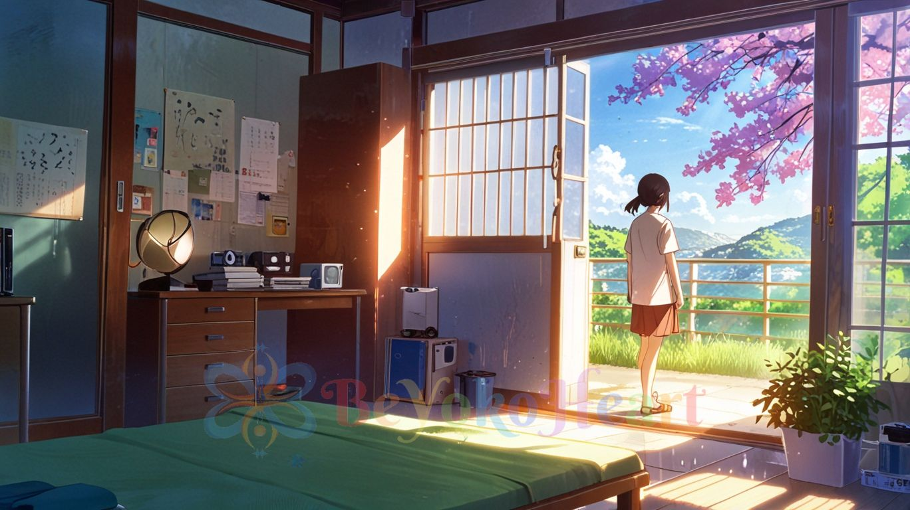
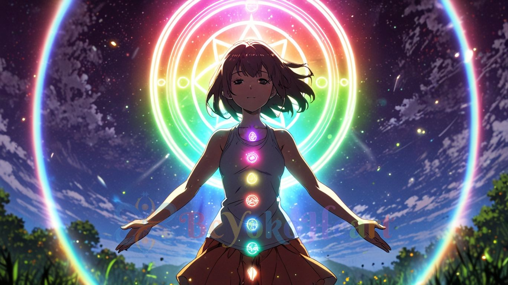
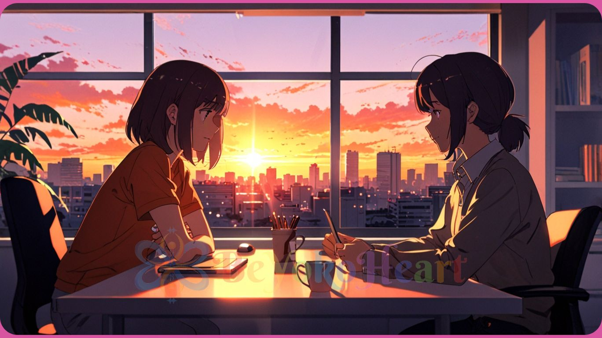

Would you like to discover my abilities?
I will answer the question whether something resonates with you, feels true to your heart.

Every day we make decisions, both small and large, which always have some impact on our lives and the world around us. I’ve experienced many times how even small decisions can have a ‘butterfly effect’ in our lives, although the results do not have to be immediately noticeable. Some time ago I made a decision that regardless of the circumstances and what others around me say, I will listen to the voice of my heart.Thanks to this practice, I’ve been able to help others by gently asking, “Does what you want truly resonate with your inner self?” I’ve tested this many times, both in my own life and with others, and it has led to many incredible experiences, events. When something resonates 100% with you then the effects can be noticeable immediately after our first contact - of course if it is in accordance with your plan and life path - it is not up to me to decide, but "your Divine Self". If you want to go back to being guided by your inner self, it's very simple - one way to do this is: just put your right hand on your heart, close your eyes and ask if, for example: a particular thing, situation, or decision resonates with your inner being? The result, of course, all depends on if you are ready to hear the truth and to what extent :) I warmly invite you to contact me, I will be glad to answer your questions :)
Holistic Energy Boost - cleansing, energising, calming, quieting, harmonising the flow of energy

We live in times where many things absorb our attention, and often even when we wake up in the morning we are already drained, having no energy for everyday life. There are many reasons why our energy, somewhere, slips away as if something or someone is silently draining, sucking it from us. Sometimes it is the result of our thoughts, people we meet, objects/places that surround us, and sometimes it’s "thought forms" or subtle beings that have attached themselves to us, even entire energetic civilisations. I warmly invite you to a holistic illumination of your Being. I will burn with the light of unconditional love and with the energy flowing from the cosmos and the Earth's core, the attachments and beings that have stuck to you (as far as it will be possible in accordance with your Divine Plan). With a stream of light and prayer, I will cleanse, energize, and bring harmony to your energy flow. This energetic adventure, whose main purpose, by uplifting your vibration, is to bring you serenity, tranquillity and raise consciousness. Remember to drink more water before and after the energy boost and generally on that day, as your body may naturally crave more hydration during and after the process. You are more than welcome to contact me, I will be happy to light you up :)
Meeting with me online, via messenger, email, chat – immediate help with a problem, the effects of which you will notice after the first meeting, the more open you are, the faster the effects will appear.

There are situations in our lives where there are so many questions that we don't know where to start. This opportunity was created precisely for those who, above all, need to talk, to be listened to, to be understood, who have questions that have remained unanswered, sometimes for a short time and sometimes for many years. It is time to face them, and we will do it together. I like to get straight to the point. My approach is honest and direct— I don't like long speeches or long arguments. The most important thing is to reach the core of the issue, to truly understand what’s going on, break down old thought patterns, beliefs, and ideas and to direct yourself to something new, in a harmonious way, in accordance with you and your heart's voice, to close the old chapter through conversation and laughter :) If you are a person who needs to talk things over sincerely, you are more than welcome to contact me :)